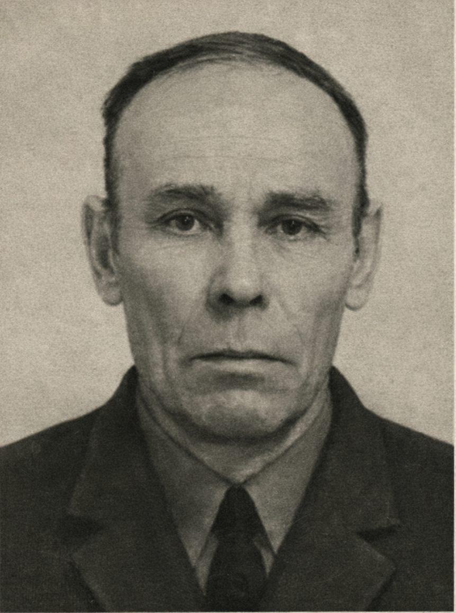

Александр Николаевич Шаньшин
1924
Гвардии старшина
Родился в 1924 г. в Алтайском крае. В 1936 году семья переехала в Новосибирск. В июне 1942 г. добровольцем ушёл на фронт, был несколько раз ранен, но всегда возвращался в строй, дошёл до Берлина. Демобилизован в 1946 г. После войны работал в школе № 95 учителем физкультуры. Награждён орденами и медалями.